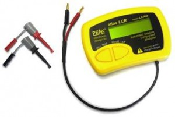
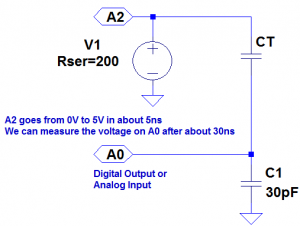
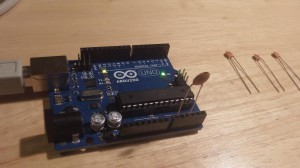
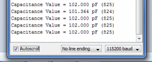

You can buy meters, like this one for instance:

that measure capacitance, but where’s the fun in that?!
If you’ve got an Arduino, why not build one instead?
Note:
I've turned this into a library for the Arduino - so that's the easiest way to measure capacitance.
Search for "capacitor" in the Arduino IDE library manager (Tools menu, Manage Libraries...).
Update: Thank you for all the interest in this article! I have managed to increase the range, so it can measure capacitances of less than 1pF to over 1000uF , still with no external components! I’ve called this the Capacitance Meter Mk II.
There are lots of examples of how to do this on the internet, but I’m going to suggest an incredibly simple way to it. Let’s start with the theory.
Consider the following circuit:

CT is the capacitor under test. We start with both capacitors discharged and A2 at 0 volts. When we raise A2 to 5 volts a current will flow through both capacitors. The voltage on A0 will settle to within 1% of it’s final value within 30ns. The value that A0 will settle to is proportional to the ratio of CT divided by the total capacitance, C1 + CT. The formulas that we are going to need are:

We will use the ADC to measure VA0. VA2 is actually 5 volts, so VA0 will vary from 0 to 5 volts, but we can use the ADC value instead, to make the calculations easier. Obviously we should then use the maximum ADC value (1023) for VA2. The ADC readings we can expect will range from about 33 for CT = 1pF to about 993 for CT = 1nF (1000pF).
So now we are ready to build the circuit and write the code. Right? Well, not quite. In the circuit above we have specified C1 as 30pF. But the Arduino will have some stray capacitance on the board and in the micro-controller. About 30pF of stray capacitance. We’re going to use this to make our circuit simpler – we are going to remove C1. But we need to work out how much stray capacitance there is, so we can plug it into the formulas above. But first, we’ll build the circuit and write the code.
The circuit is surprisingly easy. In fact there isn’t a circuit now. We’re going to use the Arduino as follows:

The capacitor is the capacitor under test between A0 and A2. The capacitors on the right are the capacitors that I am going to test a bit later on.
The code looks like this:
const int OUT_PIN = A2;
const int IN_PIN = A0;
//Capacitance between IN_PIN and Ground
//Stray capacitance is always present. Extra capacitance can be added to
//allow higher capacitance to be measured.
const float IN_STRAY_CAP_TO_GND = 24.48; //initially this was 30.00
const float IN_EXTRA_CAP_TO_GND = 0.0;
const float IN_CAP_TO_GND = IN_STRAY_CAP_TO_GND + IN_EXTRA_CAP_TO_GND;
const int MAX_ADC_VALUE = 1023;
void setup()
{
pinMode(OUT_PIN, OUTPUT);
//digitalWrite(OUT_PIN, LOW); //This is the default state for outputs
pinMode(IN_PIN, OUTPUT);
//digitalWrite(IN_PIN, LOW);
Serial.begin(115200);
}
void loop()
{
//Capacitor under test between OUT_PIN and IN_PIN
//Rising high edge on OUT_PIN
pinMode(IN_PIN, INPUT);
digitalWrite(OUT_PIN, HIGH);
int val = analogRead(IN_PIN);
//Clear everything for next measurement
digitalWrite(OUT_PIN, LOW);
pinMode(IN_PIN, OUTPUT);
//Calculate and print result
float capacitance = (float)val * IN_CAP_TO_GND / (float)(MAX_ADC_VALUE - val);
Serial.print(F("Capacitance Value = "));
Serial.print(capacitance, 3);
Serial.print(F(" pF ("));
Serial.print(val);
Serial.println(F(") "));
while (millis() % 500 != 0)
;
}
The code above loops round every half second, applying a 5V pulse to the capacitor, and measuring the voltage the other side. It then prints out the calculated capacitance (and raw ADC value).
If we try this out it won’t be very accurate. That is because the stray capacitance isn’t exactly 30pF. So we need to calibrate it. I did this with a 100pF capacitor. My multimeter reckons that it actually has a value of 102pF. The reading I get on my Arduino board is 125pF (raw ADC value 825). So if we put VA0 = 825, VA2 = 1023 and CT = 102 into the second equation, this tells us that C1 is 24.48pF. So I changed IN_STRAY_CAP_TO_GND to 24.48 and uploaded this to the Arduino. This time the value displayed on the serial monitor is 102pF (most of the time!).

I tried it out with the following capacitors:

This was the results of my tests:
| Capacitor |
Reading |
|
|
| – |
0.072 pF (3) |
| 15J |
15.461 pF (396) |
| 22J |
23.403 pF (500) |
| 47J |
48.532 pF (680) |
| 101J |
102.000 pF (825) |
| 471K |
448.030 pF (970) |
| 102K |
1064.348 pF (1000) |
| 392K |
3553.097 pF (1016) |
| 472K |
4984.128 pF (1018) |
I was curious to know how accurate this might be, so I worked it out. You can see the results of my analysis here. My conclusion was that you could expect a resolution of about 1% between 3.5pF and 225pF, and about 5% between 0.5pF and 1300pF. I haven’t worked the accuracy and linearity yet – I need to get hold of some very accurate reference capacitors (or a very accurate meter) for that.
You can build your own capacitor, and do experiments, which I have demonstrated here.
If you want to build on this or make a complete LCR meter, I have some ideas here.


{kind=link}
{kind=link}
{kind=link}
{kind=link}
{kind=link}
{kind=link}